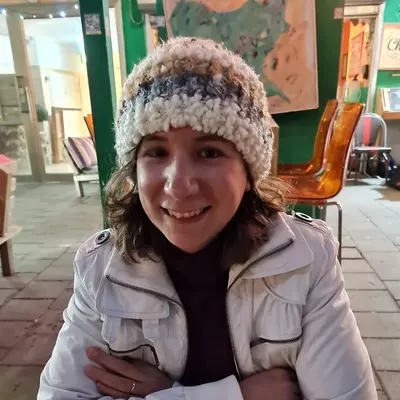

PhD student
Hagar Naim
Co-advisor: Prof. Noga Kronfeld-Schor
Hagar joined the group in May 2021 as a PhD student after completing her M.Sc. in Ecology and Environmental Studies at the Faculty of Life Sciences, Tel Aviv University.
Her PhD research focuses on investigating the effects of light pollution on the immune system, with an emphasis on the intricate interplay between the biological clock and both adaptive and innate immune responses.
To explore the role of the biological clock in regulating immune function, Hagar employs a unique animal model (Acomys spp.) that includes both nocturnal and diurnal species.